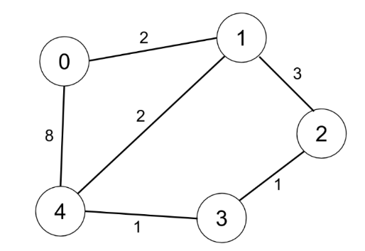
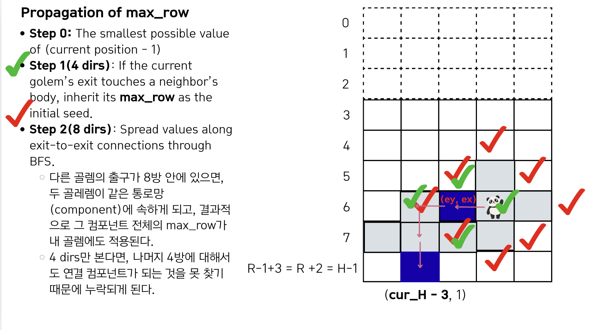

Lecture 1-2. 구현 실습#
예시 문제 링크
3번: 마법의 숲 탐색 문제 풀이#
문제 정리
격좌/좌표: RxC를 HXC로 변환 (O, R-1) -> (0, H-1)까지
move_golem(): 아래로 최대한 내려갈 수 있는 (move as far south as possible) 함수 구현
Step 2-1: rolling downward -> collision check 3 cells
Step 2-2: rotating left while moving downward -> collision check 5 cells
Step 2-3: rotating right while moving downward -> collision check 5 cells
settle_or_reset():
정착 실패: 골렘이 멈췄을 때 십자 5칸 중 한 칸이라도 숲 밖(상단 패딩 포함 관점)이라면, 지금까지 놓인 모든 골렘을 전부 지우고 이번 시도는 0점 처리 후 다음 시도로 넘어간다.
정착 성공 시 배치: 정지 위치에 중심+팔 4칸을 기록하고, 출구 방향도 함께 저장한다(다음 단계 탐색에 필요).
spirits 탐색 (explore)
골렘의 출구와 가까운 골렘을 통해 seed max값을 초기화 -> 8가지 가능한 방향으로 같은 component의 값들에 큰 값 -> 작은 값으로 value propagation(BFS사용)
관련하여
 시드의 최대값 초기화가 중요한 이유 확인
시드의 최대값 초기화가 중요한 이유 확인
solve(): 위의 함수들을 사용하여, input을 받고 결과 출력하는 함수
격자/좌표:
숲은 R×C 격자. 문제 기준으로 가장 위가 1행, 가장 아래가 R행(좌표는 1-based). 정령(골렘)은 북쪽(격자 위쪽) 바깥에서 진입한다.
(구현 팁) 진입·회전 동작을 편하게 처리하려고 상단에 3행을 더 붙인 격자(R+3×C) 로 두고 시뮬레이션하는 전형적인 방식이 많이 쓰인다.
입력 & 골렘 정의 (총 K번)
한 번의 시도마다 열 c(1…C), 출구 방향 d(0:북, 1:동, 2:남, 3:서) 가 주어진다. 골렘은 십자(+) 모양(중심+상하좌우) 으로 5칸을 차지하며, 출구는 중심에서 d 방향으로 인접한 1칸이다.
graph의 확장

In the beginning, the golem may extend up to 3 cells above the forest. To handle this, we add 3 buffer rows at the top of the grid. These buffer rows are not part of the forest but provide enough room for the golem to move and settle safely.
각 step 구현
When the golem moves one step down, we must check 3 positions below the center: directly underneath, and one cell to the left and right. If all 3 are empty, the golem can move downward without collision.

Now let’s look at rotation to the left. For the golem to rotate, five specific cells must be empty. Interestingly, the rules allow rotation even if the upper-right or lower-right cells are occupied. We number the directions North, East, South, and West as 0, 1, 2, and 3. Using this, left rotation is simply (d + 3) mod 4, and right rotation is (d + 1) mod 4.

Rotation to the right works symmetrically. Again, five surrounding cells must be empty to allow the move. The concept is the same as left rotation, but we apply the clockwise formula.

When the golem finally stops, all four arms must be inside the forest area, which is from row 3 down to H–1. To manage state, we store each golem’s position and exit direction in units[gid]. We also record which exit belongs to which golem in exit_map. This way, exit_map tells us the gid, and units gives us the exact center and direction. 
정보 저장
We maintain two separate grids: golem_arr and exit_map. The golem array records body occupancy and is used for collision checks. The exit map records only exits, which lets us trace connectivity between golems using BFS. This separation is crucial because body cells and exit cells need to be treated differently.

최댓값 전파

Finally, let’s look at how we propagate the maximum reachable row.
Step one: if
the current golem’s exittouches a neighbor’s body, we inherit itsmax_rowas theseedvalue.Step two: using BFS, we spread values along exit-to-exit connections across the whole component.
This two-step design ensures accuracy — newly placed golems immediately get the correct value. It also improves efficiency, since we avoid repeated updates by maximizing early and propagating just once.

best 계산 단계 (시드 확정)
start_id의 출구 주변을 보면서, 이미 숲에 있던 이웃 골렘들이 가지고 있던max_row값 참고방금 들어온 골렘이 가질 수 있는 가장 큰 시작값 (best)를 정함.
전파 단계 (BFS)
이제
start_id가 속한 component전체에 대해, max_row가 작은 이웃 노드들을 best 값으로 끌어올림.이 과정을 통해 같은 컴포넌트 안의 모든 골렘이 최대값을 공유
이렇게 해 두면, 나중에 컴포넌트 안에서 어느 골렘을 시작점으로 잡아도 같은 답을 얻을 수 있습니다.
다음 골렘을 위해 준비 완료
import sys
—– 입력 —–
board = [list(map(int, sys.stdin.readline().split())) for _ in range(5)] calls = [] for _ in range(5): calls += list(map(int, sys.stdin.readline().split())) # 총 25개
숫자 -> (r, c) 좌표 매핑
pos = {} for r in range(5): for c in range(5): pos[board[r][c]] = (r, c)
행/열/대각 카운터와 완료 체크
row = [0]*5 col = [0]*5 diag = [0, 0] # [메인 대각(r==c), 반대각(r+c==4)] line_done = 0
같은 줄을 중복 카운트하지 않게 완료 여부 기록
row_done = [False]*5 col_done = [False]*5 diag_done = [False, False]
for i, num in enumerate(calls, start=1): # i = 호출 횟수(1~25) r, c = pos[num]
row[r] += 1
col[c] += 1
if r == c:
diag[0] += 1
if r + c == 4:
diag[1] += 1
# 이번 호출로 막 완성된 줄만 카운트 추가
if row[r] == 5 and not row_done[r]:
line_done += 1
row_done[r] = True
if col[c] == 5 and not col_done[c]:
line_done += 1
col_done[c] = True
if r == c and diag[0] == 5 and not diag_done[0]:
line_done += 1
diag_done[0] = True
if r + c == 4 and diag[1] == 5 and not diag_done[1]:
line_done += 1
diag_done[1] = True
if line_done >= 3:
print(i)
break
5번: 미생물 연구#
문제 정리
preliminaries: 좌상단이 시작점인지, 좌하단이 시작점인지 좌표 변환
NxN 정사각형 배양 용기, 좌측 하단 (0,0), 우측 상단 (N, N)
총 Q번 실험동안, 실험 결과 기록
2-1. insert_and_get_result() 미생물 투입 후, 배양
(r1, c1) ~ (r2, c2) 직사각형 미생물 투입, 영역내에는 새로 투입된 미생물만 남음.
기존에 있던 미생물이 먹힌 경우, 영역이 두 개 이상으로 나뉘면 기존 미생물은 모두 사라짐. -> 항상 미생물은 하나의 그룹으로만 이루어지게 만듦.
2-2. 배양 용기 이동: move_microbe()
기존 용기와 동일한 새로운 배양 용기로 이동. 기존 배양 용기에 미생물이 한 마디도 남지 않을 때까지
가장 차지한 영역 ((r1, c1) ~ (r2, c2))이 넓은 무리 하나 선택 -> 2개 이상이면 먼저 투입된 미생물 선택 (용기에는 미생물을 넣은 시간 정보 필요 -> idx가 작은 것 선택)
선택된 미생물의 영역 ((r1, c1) ~ (r2, c2))은
배양 용기의 범위를 벗어나지 않으며
다른 미생물의 영역과 겹치지 않아야하고,
위의 조건에서 최대한 x좌표가 작은 위치로 미생물을 옮기는데,
그 위치가 2개 이상이면 최대한 y좌표가 작은 위치로 오도록 옮김
위의 조건이 없다면, 옮기지 못하고 사라짐
2-3. record()
미생물 무리 중 상하좌우로 닿아있는 인접한 무리 확인
맞닿은 면이 둘 이상이더라도 micro_id같으면 한 번만 확인
인접한 무리가 있으면
확인하는 두 무리가 A,B라면 (미생물 A영역의 넓이) x (미생물 B영역의 넓이) 성과
확인한 모든 쌍의 성과 기록
import sys from collections import deque, defaultdict
input = sys.stdin.readline
방향: 상하좌우 (행, 열)
DR = (-1, 1, 0, 0) DC = (0, 0, -1, 1)
def in_range(n, r, c): return 0 <= r < n and 0 <= c < n
def bfs_component(grid, n, sr, sc, visited): “””grid[sr][sc]의 id로 연결된 컴포넌트 크기와 인접한 다른 id 집합을 반환””” idv = grid[sr][sc] q = deque([(sr, sc)]) visited[sr][sc] = True size = 1 adj = set()
while q:
r, c = q.popleft()
for d in range(4):
nr, nc = r + DR[d], c + DC[d]
if not in_range(n, nr, nc):
continue
nid = grid[nr][nc]
if nid == idv and not visited[nr][nc]:
visited[nr][nc] = True
q.append((nr, nc))
size += 1
elif nid != idv:
adj.add(nid) # 0 포함해도 뒤에서 걸러냄
return idv, size, adj
def get_all_shapes(grid, n): “””현재 용기의 모든 무리(id>0)에 대해 각 id의 셀 좌표 리스트와 면적을 구한다.””” visited = [[False]*n for _ in range(n)] id_to_cells = defaultdict(list) id_to_size = defaultdict(int)
for r in range(n):
for c in range(n):
if grid[r][c] > 0 and not visited[r][c]:
idv, size, _ = bfs_component(grid, n, r, c, visited)
# 다시 한 번 같은 컴포넌트를 순회해 좌표들 수집
# (방금 BFS에서 좌표를 저장해도 되지만, 범위가 작아 재탐색해도 충분)
q = deque([(r, c)])
visited2 = set([(r, c)])
id_to_cells[idv].append((r, c))
cnt = 1
while q:
rr, cc = q.popleft()
for d in range(4):
nr, nc = rr + DR[d], cc + DC[d]
if in_range(n, nr, nc) and (nr, nc) not in visited2 and grid[nr][nc] == idv:
visited2.add((nr, nc))
id_to_cells[idv].append((nr, nc))
q.append((nr, nc))
cnt += 1
id_to_size[idv] = cnt # size와 동일
return id_to_cells, id_to_size
def normalize_shape(cells): “””셀 좌표들을 (최소 r, 최소 c)을 (0,0)으로 옮긴 정규화 모양과 모양의 최대 r, 최대 c(경계)를 반환””” min_r = min(r for r, _ in cells) min_c = min(c for _, c in cells) shape = [(r - min_r, c - min_c) for r, c in cells] max_r = max(r for r, _ in shape) max_c = max(c for _, c in shape) return shape, max_r, max_c
def can_place(new_grid, n, shape, base_r, base_c): for dr, dc in shape: r, c = base_r + dr, base_c + dc if not in_range(n, r, c) or new_grid[r][c] != 0: return False return True
def place(new_grid, shape, base_r, base_c, idv): for dr, dc in shape: new_grid[base_r + dr][base_c + dc] = idv
def insert_and_split(n, grid, rect_r1, rect_c1, rect_r2, rect_c2, new_id): “””직사각형을 new_id로 덮어쓰고, 그로 인해 분리된 기존 무리는 소멸시킨다.””” affected = set() # 기존 덮어쓰기(잡아먹힘) for r in range(rect_r1, rect_r2): for c in range(rect_c1, rect_c2): if grid[r][c] > 0: affected.add(grid[r][c]) grid[r][c] = new_id
# 분리 여부 확인: 각 affected id에 대해 연결 성분 개수 count
# 연결 성분이 2개 이상이면 해당 id 전부 소멸(0으로)
if affected:
# 현재 grid에서 해당 id의 컴포넌트 수 세기
visited = [[False]*n for _ in range(n)]
comp_cnt = {aid: 0 for aid in affected}
for r in range(n):
for c in range(n):
if grid[r][c] in affected and not visited[r][c]:
idv, _, _ = bfs_component(grid, n, r, c, visited)
if idv in comp_cnt:
comp_cnt[idv] += 1
# 소멸 처리
to_erase = {aid for aid, cnt in comp_cnt.items() if cnt >= 2}
if to_erase:
for r in range(n):
for c in range(n):
if grid[r][c] in to_erase:
grid[r][c] = 0
def move_all(n, grid): “””규칙에 따라 새 배양 용기로 이동한 뒤의 격자를 반환””” id_to_cells, id_to_size = get_all_shapes(grid, n)
# 이동 순서: (면적 내림차순, id 오름차순)
order = sorted(id_to_size.items(), key=lambda x: (-x[1], x[0]))
new_grid = [[0]*n for _ in range(n)]
for idv, _sz in order:
cells = id_to_cells[idv]
shape, max_r, max_c = normalize_shape(cells)
placed = False
# x(열) 최소 → y(행) 최소 (즉, c를 먼저, r을 나중에 증가)
for c in range(0, n - max_c):
if placed:
break
for r in range(0, n - max_r):
if can_place(new_grid, n, shape, r, c):
place(new_grid, shape, r, c, idv)
placed = True
break
# 못 놓으면 소멸(=그냥 스킵)
return new_grid
def score(n, grid): “””최종 배치에서 인접한 서로 다른 무리 쌍의 면적 곱 합산””” # 모든 id의 면적 계산 area = defaultdict(int) for r in range(n): for c in range(n): if grid[r][c] > 0: area[grid[r][c]] += 1
# 인접 쌍(우/하만 보면 중복 제거 가능)
pairs = set()
for r in range(n):
for c in range(n):
a = grid[r][c]
if a == 0:
continue
# 오른쪽
if c+1 < n:
b = grid[r][c+1]
if b != 0 and b != a:
u, v = (a, b) if a < b else (b, a)
pairs.add((u, v))
# 아래
if r+1 < n:
b = grid[r+1][c]
if b != 0 and b != a:
u, v = (a, b) if a < b else (b, a)
pairs.add((u, v))
total = 0
for a, b in pairs:
total += area[a] * area[b]
return total
def main(): N, Q = map(int, input().split()) grid = [[0]*N for _ in range(N)] # 실험은 id = 1..Q for new_id in range(1, Q+1): r1, c1, r2, c2 = map(int, input().split()) # 1) 투입 + 분리 소멸 처리 insert_and_split(N, grid, r1, c1, r2, c2, new_id) # 2) 이동 grid = move_all(N, grid) # 3) 결과 출력 print(score(N, grid))
if name == “main”: main()